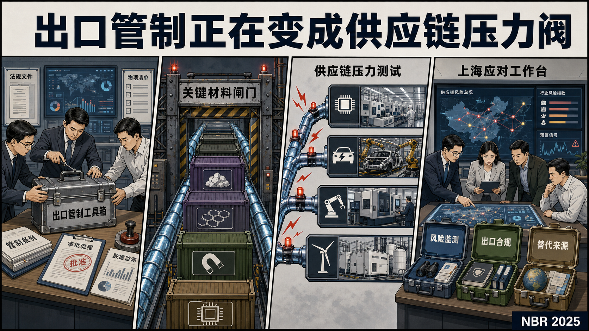

Global Tech Think Tank Watch
国际科技智库周报
本周态势
本周形成 66 条 P0/P1 重点，议题集中在AI、数字基础设施与技术治理、涉华科技竞争与上海参考。产业链、制造与能源信号 14 条；AI 与数字基础设施信号 41 条；直接涉华条目 14 条。
本周必读
- 该报告比较AI智能体和人类在进攻性网络任务中的表现，结论是AI智能体已经降低网络攻击门槛，使非专业人员更容易完成侦察、漏洞利用和攻击链组织。
- 其核心判断是，智能化调度、仓储、运输和保障体系可提升平时效率，但在台海和印太高强度作战中，数据依赖、网络暴露面、模型可靠性和战场干扰会转化为新的脆弱性。
- 报告聚焦中国医疗健康数据、跨境流动与AI治理之间的张力，强调健康数据既是AI训练和产业竞争资源，也是国家安全、隐私保护和国际合作中的敏感资产。
- 该章节集中刻画 AI 的经济足迹：2025 年全球企业 AI 投资翻倍，私人投资增长最快，生成式 AI 吸收近半数私人 AI 资金；美国私人 AI 投资仍显著领先中国和欧洲，但中国政府引导基金可能使公开口径低估其总投入。
- 其核心判断是，欧盟若希望将气候目标、产业竞争力与对外经济合作结合起来，必须把伙伴国的产业升级和技术能力建设纳入设计，否则清洁合作容易被理解为新的贸易合规负担。
议题观点速览
AI、数字基础设施与技术治理（4 条）
- RAND：该报告比较AI智能体和人类在进攻性网络任务中的表现，结论是AI智能体已经降低网络攻击门槛，使非专业人员更容易完成侦察、漏洞利用和攻击链组织。
- Stanford Institute for Human-Centered Artificial Intelligence：该章节集中刻画 AI 的经济足迹：2025 年全球企业 AI 投资翻倍，私人投资增长最快，生成式 AI 吸收近半数私人 AI 资金；美国私人 AI 投资仍显著领先中国和欧洲，但中国政府引导基金...
- RAND：该报告基于德国、荷兰、法国高级官员参与的AI网络危机桌面推演，指出政府在危机阈值、模型风险评估、开源权重滥用、关键基础设施防护和盟友协作方面存在制度短板。
- Information Technology and Innovation Foundation：该文讨论对抗性AI蒸馏可能削弱美国前沿模型优势的问题，即竞争者通过调用、微调或蒸馏方式复制高能力模型能力。
涉华科技竞争与上海参考（4 条）
- Australian Strategic Policy Institute：其核心判断是，智能化调度、仓储、运输和保障体系可提升平时效率，但在台海和印太高强度作战中，数据依赖、网络暴露面、模型可靠性和战场干扰会转化为新的脆弱性。
- Atlantic Council GeoTech Center and Cyber Statecraft Initiative：报告聚焦中国医疗健康数据、跨境流动与AI治理之间的张力，强调健康数据既是AI训练和产业竞争资源，也是国家安全、隐私保护和国际合作中的敏感资产。
- Brookings Center for Technology Innovation：该材料来自 Brookings《The Beijing Brief》特别节目，围绕联合国日内瓦AI、安全与伦理会议期间的美中AI安全对话展开。
- Bruegel：文章指出，美中AI竞争已经从先进芯片本身延伸到“硬件-软件-开发者生态”的完整技术栈。
产业链、制造与能源基础设施（4 条）
- ORF America Technology Policy：其核心判断是，欧盟若希望将气候目标、产业竞争力与对外经济合作结合起来，必须把伙伴国的产业升级和技术能力建设纳入设计，否则清洁合作容易被理解为新的贸易合规负担。
- RAND：该报告对加州零温室气体排放电网情景下相关技术的成本和成熟度进行技术经济分析，聚焦氢能在电力系统脱碳中的潜在作用。
- Information Technology and Innovation Foundation：该报告评估美国以国家安全为由对半导体进口加征232关税的经济后果。
- Center for Strategic and International Studies：该文讨论AI数据中心扩张对高带宽内存、DRAM和先进封装能力的挤压效应。
科研体系、人才与创新政策（4 条）
- Stanford Institute for Human-Centered Artificial Intelligence：该行业报告指出，大语言模型已经从研究实验室进入企业工具、教育辅导、医疗助手和企业智能体等日常基础设施，但现有开发框架仍过度依赖技术性能指标，难以判断系统是否真正服务用户与组织。
- Science and Technology Policy Institute Korea：报告讨论韩国在后2030全球科技创新议程中的定位转变，主张从国际议程跟随者转向议程领导者，并提出议程设置框架。
- RAND：该文件综合 RAND Europe 为 Wellcome 开展的公众科学信任研究，概括信任和科学可信度的主要发现。
- RAND：该报告关注社交媒体环境中的科学可信度，属于公众科学信任研究的专题成果。
本期目录
- P0主题 01｜AI智能体让新手具备进攻性网络能力
- P0主题 02｜中国军事AI后勤：和平收益与战时脆弱性
- P0主题 03｜开放与控制的平衡：中国跨境健康数据与AI治理
- P0主题 04｜日内瓦来信：AI、安全与美中对话
- P0主题 05｜2026年AI指数报告经济篇
- P0主题 06｜欧洲AI安全与网络滥用桌面推演洞察
- P0主题 07｜技术栈之争：美中AI竞争正超越芯片
- P0主题 08｜DeepSeek招聘信号显示其布局网络安全AI智能体
- P0主题 09｜布鲁塞尔推动下欧洲开始警惕中国技术
- P0主题 10｜爱尔兰：多重因素塑造对华科技创新立场
- P0主题 11｜北美堡垒：墨西哥在保障区域经济未来中的作用
- P0主题 12｜碎片化欧洲如何应对中国科技创新力量
- P0主题 13｜绿色基础设施投资能在多大程度上缓解中国清洁能源产能过剩？
- P0主题 14｜重塑欧盟与全球南方能源合作：互利型清洁贸易与投资伙伴关系
- P0主题 15｜评估氢能在加州电力系统脱碳中的作用
- P0主题 16｜美国需要应对对抗性AI蒸馏的战略回应
- P0主题 17｜半导体进口232关税的经济后果
- P0主题 18｜中国AI模型需要关注什么
- P0主题 19｜无人监管的AI风险：市场把关
- P1主题 20｜AI异常行为举报机制正在成形
- P1主题 21｜特朗普政府AI管制为中国缩小差距打开窗口
- P1主题 22｜廉价AI成为秘密武器
- P1主题 23｜碎片化欧洲应对中国科技创新力量执行摘要
- P1主题 24｜闭合反馈回路：改善士兵、初创企业与战略之间的创新反馈
- P1主题 25｜中国生物医药竞争力上升要求美国回应
- P1主题 26｜AI价值杠杆：创新导向战略如何让企业与劳动者获得更高收益
- P1主题 27｜AI存在内存瓶颈
- P1主题 28｜云服务被纳入DMA：欧盟对AWS与Azure的模糊打击
- P1主题 29｜让公共算力服务应用型AI初创企业
- P1主题 30｜僵化的太空频谱配置可能限制生产率
- P1主题 31｜签证障碍正在削弱美国工业竞争力
- P1主题 32｜更强工业自立能力可提升澳大利亚威慑战略可信度
- P1主题 33｜以人为本的大语言模型
- P1主题 34｜从议程跟随到议程领导：后2030全球STI议程战略（第二年）与议程设置框架
- P1主题 35｜AI竞赛中的格林斯潘教训
- P1主题 36｜欧洲清洁工业未来的大战略
- P1主题 37｜生成式AI聊天机器人使用方式的网络流量证据
- P1主题 38｜电池地缘政治：在储能竞赛中平衡产业力量
- P1主题 39｜2026年AI指数报告
- P1主题 40｜公众科学信任之信任与科学可信度总体发现
- P1主题 41｜公众科学信任之社交媒体中的科学可信度
- P1主题 42｜补上远程访问管制闭环
- P1主题 43｜正在输掉未来战争
- P1主题 44｜英国防务领域的私人资本
- P1主题 45｜隐蔽的安全挑战：应对电网容量约束及其对军事设施的影响
- P1主题 46｜Aspire to STEM项目评估报告
- P1主题 47｜公众科学信任之研究格局映射
- P1主题 48｜美国核酸筛查政策的演变
- P1主题 49｜欧洲版权环境意见：保留文本与数据挖掘例外以支撑AI创新
- P1主题 50｜轨道数据中心可行性缺口及其治理风险
- P1主题 51｜G7应接受AI标准提议但强化可执行性
- P1主题 52｜平台把关前置监管：AI与事前竞争规制的边界
- P1主题 53｜AI风险生态学
- P1主题 54｜欧盟与英国前沿AI延迟问题
- P1主题 55｜治理AI越狱事件
- P1主题 56｜供应链、能源与AI交汇：评估AI能源供应链脆弱性
- P1主题 57｜评估AI赋能计算机蠕虫风险
- P1主题 58｜青少年转向聊天机器人寻求心理健康帮助：需要安全规则
- P1主题 59｜特朗普政府限制Anthropic新模型出口削弱美国AI出海战略
- P1主题 60｜新证据反驳AI正在摧毁就业的说法
- P1主题 61｜GUARD法案未能有效保护未成年人AI陪伴应用利益
- P1主题 62｜核酸合成筛查不对称性叠加：强化全球生物安全治理的政策路径
- P1主题 63｜美国联邦AI政策从治理走向执行
- P1主题 64｜LLM智能体能否选择并调用生物工具：初步生物安全评估
- P1主题 65｜2026年CEO对话观点：AI与产业领导力
- P1主题 66｜超越政府监管工具箱：企业与社会组织缓释变革性AI风险
漫画导读

读图说明1：锚定报告：NBR《中国出口管制图谱》。关键判断：出口管制正在制度化为经济安全工具，并通过关键矿产、材料加工设备和下游行业传导为供应链压力。
AI智能体让新手具备进攻性网络能力
该报告比较AI智能体和人类在进攻性网络任务中的表现，结论是AI智能体已经降低网络攻击门槛，使非专业人员更容易完成侦察、漏洞利用和攻击链组织。
- 对中国和上海网络安全治理的意义在于，AI安全议题需要同网络攻防、关键基础设施防护、企业红队测试和模型工具调用权限联动。
中国军事AI后勤：和平收益与战时脆弱性
其核心判断是，智能化调度、仓储、运输和保障体系可提升平时效率，但在台海和印太高强度作战中，数据依赖、网络暴露面、模型可靠性和战场干扰会转化为新的脆弱性。
- 该文分析中国军队将AI嵌入后勤体系的战略含义。
- 对后续跟踪而言，军民两用物流、智能供应链和网络安全能力将更频繁进入国防科技竞争视野。
开放与控制的平衡：中国跨境健康数据与AI治理
报告聚焦中国医疗健康数据、跨境流动与AI治理之间的张力，强调健康数据既是AI训练和产业竞争资源，也是国家安全、隐私保护和国际合作中的敏感资产。
- 其价值在于把AI治理问题从模型监管推进到数据要素、公共卫生、产业政策和跨境合规的交叉地带。
日内瓦来信：AI、安全与美中对话
该材料来自 Brookings《The Beijing Brief》特别节目，围绕联合国日内瓦AI、安全与伦理会议期间的美中AI安全对话展开。
- 讨论重点包括战略竞争背景下保持技术安全沟通渠道、Track II对话的延续价值、政府层面接触恢复的可能性，以及AI安全议题如何进入美中关系管理。
政策建议
后续应关注美中AI安全对话是否形成更稳定的议程、标准或风险通报机制，以及这些议程对国内AI治理、国际合作和城市级AI应用治理的外溢影响。中国 / 上海参考
对中国和上海相关研判的价值在于：美国政策界正在把AI安全从产业竞争议题提升为危机沟通和国际规则议题。2026年AI指数报告经济篇
该章节集中刻画 AI 的经济足迹：2025 年全球企业 AI 投资翻倍，私人投资增长最快，生成式 AI 吸收近半数私人 AI 资金；美国私人 AI 投资仍显著领先中国和欧洲，但中国政府引导基金可能使公开口径低估其总投入。
- 材料同时跟踪 AI 企业收入、算力成本、云厂商资本开支、组织采用率、劳动力冲击、生产率提升和工业机器人安装情况。
- 对后续研判而言，AI 竞争已经从模型能力扩展到资金、算力基础设施、企业采用和机器人产业化，适合作为创新体系和数字经济监测指标，而不宜只归入 AI 治理观察。
欧洲AI安全与网络滥用桌面推演洞察
该报告基于德国、荷兰、法国高级官员参与的AI网络危机桌面推演，指出政府在危机阈值、模型风险评估、开源权重滥用、关键基础设施防护和盟友协作方面存在制度短板。
- 对上海和中国科技治理的参考价值在于：AI安全治理不能停留在原则文件，应提前建立跨部门情景推演、独立技术评估和危机沟通机制。
技术栈之争：美中AI竞争正超越芯片
文章指出，美中AI竞争已经从先进芯片本身延伸到“硬件-软件-开发者生态”的完整技术栈。
- 英伟达的优势不只来自GPU性能，也来自CUDA形成的开发者网络效应、优化库积累和高切换成本。
- 华为则试图用CANN、MindSpore、torch_npu以及与DeepSeek等模型生态的兼容，降低开发者从英伟达生态迁移到昇腾体系的成本。
中国 / 上海参考
对中国与上海相关研判的意义在于：AI算力竞争的关键不只是芯片供给，还包括软件栈、开发工具、开源模型、云服务、应用场景和开发者社区能否形成闭环。 上海如果推进智能算力、模型生态和行业AI应用，应把国产硬件适配、框架迁移、模型部署工具链和开发者生态作为同一套产业政策问题处理。DeepSeek招聘信号显示其布局网络安全AI智能体
该文从DeepSeek招聘信息切入，判断其正在布局具备代码漏洞发现和网络安全能力的智能体模型。
- 值得关注的不是单一模型性能，而是中国开源/低成本AI路线与网络攻防能力结合后的扩散效应。
- 该条目应纳入AI安全、网络安全治理和中国AI产业能力三条线索持续观察。
布鲁塞尔推动下欧洲开始警惕中国技术
MERICS 将欧盟对华技术政策概括为从开放合作转向经济安全和去风险实施。
- 文章聚焦中国技术进入欧洲后的三类压力：成熟制程芯片可能改变欧洲芯片进口结构，电动汽车与电池产业使欧洲在市场准入和技术转移之间摇摆，太阳能逆变器等能源基础设施则暴露网络安全和供应链信任问题。
中国 / 上海参考
对上海相关研究而言，可用于比较欧洲对中国新能源、半导体、数字基础设施和关键供应商的风险评估框架，也可反向提示上海企业出海欧洲时面临的技术安全审查、采购非价格标准、数据与网络安全合规等政策约束。爱尔兰：多重因素塑造对华科技创新立场
该章节分析爱尔兰对华科技创新合作立场，指出其开放型、外资驱动经济模式是核心基础，同时又受到安全、竞争力、产业政策和欧盟对华政策调整的共同影响。
- 爱尔兰在医药、药品研发、对华直接投资等领域与中国保持合作，但政府战略正在更多纳入科技安全和经济竞争因素。
政策建议
对上海而言，该材料可用于观察欧洲国家在生命科学、跨国企业研发、外资产业链和科技安全之间的政策平衡，也可作为国际科技合作分类管理和国别差异研判的参考。北美堡垒：墨西哥在保障区域经济未来中的作用
报告认为墨西哥既是美国制造业枢纽，又高度依赖中国投入品，2024 年自中国进口与对华出口约为 14:1，投资审查、出口管制和供应链风险管理能力不足。
- 报告将经济安全界定为北美贸易政策的新组织原则，主张在 2026 年 USMCA 审查中把关键技术、数据、供应链和战略基础设施纳入区域安全框架。
- 报告建议设立 USMCA 经济安全委员会、区域依赖图谱、墨西哥国家经济安全法和北美能力基金，并把半导体、电池、电信、AI、化学品列为协同监管关键部门。
- 对上海的观察意义在于：北美正在把产业链重组、关键技术准入和区域制度能力结合起来，可能影响中国企业对美墨加供应链布局。
碎片化欧洲如何应对中国科技创新力量
该报告以欧洲多国章节比较中国作为科技创新力量带来的合作、竞争与风险，指出欧洲对华科技政策呈现分散化和不均衡去风险。
- 对上海相关研判的价值在于：欧洲科技合作环境正在细分，不同国家、行业和研究领域的开放度差异会影响国际合作布局。
绿色基础设施投资能在多大程度上缓解中国清洁能源产能过剩？
论文认为，中国产业政策推动太阳能、风电等可再生技术制造全球领先，但也形成严重产能过剩并压缩行业利润。
- 作者通过情景分析评估电网等电力基础设施扩张的需求拉动作用，认为加大电力基础设施投资可在短期减少弃电、释放清洁能源需求并缓解制造端压力，但要恢复长期均衡仍需供给侧整合。
- 该文对上海关注先进制造和绿色产业的意义在于：清洁技术竞争不仅取决于制造能力，也取决于电网、消纳、投资节奏和产业整合能力。
重塑欧盟与全球南方能源合作：互利型清洁贸易与投资伙伴关系
其核心判断是，欧盟若希望将气候目标、产业竞争力与对外经济合作结合起来，必须把伙伴国的产业升级和技术能力建设纳入设计，否则清洁合作容易被理解为新的贸易合规负担。
- 报告围绕欧盟清洁贸易与投资伙伴关系（CTIPs）框架，评估其能否从碳边境调节机制和全球门户等政策工具延伸为支持全球南方绿色工业化、技术合作、本地价值创造与气候融资的制度安排。
- 对上海的启示在于，绿色低碳产业合作应同时关注技术转移、标准协同、金融动员和本地供应链嵌入。
评估氢能在加州电力系统脱碳中的作用
该报告对加州零温室气体排放电网情景下相关技术的成本和成熟度进行技术经济分析，聚焦氢能在电力系统脱碳中的潜在作用。
- 对上海能源科技与新型电力系统研究的价值在于，氢能不应仅作为产业项目看待，还应放入电网灵活性、可再生能源消纳、成本曲线和技术成熟度评估框架中。
美国需要应对对抗性AI蒸馏的战略回应
该文讨论对抗性AI蒸馏可能削弱美国前沿模型优势的问题，即竞争者通过调用、微调或蒸馏方式复制高能力模型能力。
- 其政策含义在于，AI竞争不只涉及芯片和模型发布管制，还涉及API访问、模型输出监测、服务条款、能力扩散和安全评估。
- 对中国与上海相关研判而言，该条目可用于观察美国如何把模型能力扩散纳入技术安全政策。
半导体进口232关税的经济后果
该报告评估美国以国家安全为由对半导体进口加征232关税的经济后果。
- ITIF认为，半导体是ICT产品和数字基础设施的关键投入品，关税会推高ICT价格、压低ICT消费和资本存量，从而削弱经济增长和生活水平。
- 报告估算，如果25%的半导体关税维持十年，美国GDP累计损失可能达到1.6万亿美元。
政策建议
对上海和中国相关产业政策研判而言，该文可作为反向参照：半导体政策不能只看上游产能安全，也要核算对装备、软件、云服务、制造业数字化和创新资本形成的系统成本。中国AI模型需要关注什么
该文梳理中国AI模型能力、成本结构、开放权重策略和政策环境，判断中国模型正在快速缩小与美国前沿系统的差距。
- 对后续跟踪而言，应重点观察中国模型在低成本部署、行业应用、国际扩散和治理标准竞争中的外溢影响。
无人监管的AI风险：市场把关
该文强调一种容易被忽视的AI风险：市场把关结构可能通过平台控制、标准设定、数据访问和分发权力影响AI创新与公共利益。
- 其贡献在于把AI风险治理从模型失控、偏见和安全事件扩展到市场结构和竞争秩序层面。
AI异常行为举报机制正在成形
该文关注AI系统异常行为、风险事件和外部举报机制，反映美国AI治理从原则讨论进入制度化风险报告阶段。
- 其政策含义在于，模型开发者、用户、研究者和监管机构之间的信息通道正在成为AI安全治理的重要基础设施。
特朗普政府AI管制为中国缩小差距打开窗口
文章认为，美国对AI扩散和芯片出口的高强度限制若缺乏盟友协调与产业执行能力，可能促使中国通过替代供应、人才和模型生态追赶。
- 研判价值在于观察美国技术管制的反作用：治理工具本身可能改变竞争节奏，并为上海理解全球AI产业链调整提供线索。
廉价AI成为秘密武器
该文讨论低成本AI能力扩散带来的战略影响。
- 核心关注点是，当模型推理成本、部署门槛和应用开发成本下降后，中小组织、地方政府、企业乃至非国家行为体都可能获得过去只属于头部机构的分析、自动化和网络能力。
- 该趋势会改变科技治理和安全治理的风险边界。
碎片化欧洲应对中国科技创新力量执行摘要
执行摘要概括欧洲面对中国科技创新力量时的分散状态：欧盟强调去风险，但成员国在科研合作、产业利益、技术安全和对华政策上执行不一。
- 该摘要适合作为快速判断欧洲对华科技政策分化的入口。
闭合反馈回路：改善士兵、初创企业与战略之间的创新反馈
该报告以美军第173空降旅小型无人机系统应用为案例，讨论军方采购、初创企业技术供给、前线使用反馈和战略需求之间的错位。
- 作者认为，陆军把尚需迭代的问题当作成熟产品规模化问题处理，导致用户反馈被层级稀释、训练和战术运用脱节、互操作标准没有落地、审批架构过度避险，最终削弱战术单元对无人机等新兴技术的吸收能力。
政策建议
对科技创新发展研究的价值在于，该报告把“技术突破”还原为一个完整的创新反馈系统：真实用户、场景测试、标准、采购、法务、供应链和规模化需求必须闭环。 对上海和长三角的启示在于，未来产业和硬科技转化不能只看企业产能，也应建立面向真实应用场景的迭代验证、中试标准和需求反馈机制。中国生物医药竞争力上升要求美国回应
该报告将中国生物医药能力上升视为美国生命科学竞争力面临的新压力。
- 报告从科学论文、专利、研发投入、临床试验和新药上市等维度判断中国正在快速追赶，并认为如果趋势延续，中国可能在十年内接近或实现若干领域的领先目标。
- ITIF由此主张美国应强化支持私营部门生命科学创新的制度环境。
中国 / 上海参考
对上海而言，张江和全市生物医药政策可借此比较“科研产出—临床转化—企业创新—全球监管进入”的链条缺口。AI价值杠杆：创新导向战略如何让企业与劳动者获得更高收益
该文关注企业如何使用生成式AI创造价值。
- 作者区分了多种AI价值杠杆，指出企业若过度把AI用于减少劳动投入和压低成本，容易低估技术的创新潜力；相较之下，把AI用于新产品、新服务、流程重构和劳动者能力增强，可能产生更高的企业回报，并降低对就业和组织能力的冲击。
政策建议
对上海企业数字化转型和AI产业应用而言，政策设计不宜只追求自动化率，应更加关注AI如何促进研发效率、产品创新、服务模式创新和劳动者技能升级。AI存在内存瓶颈
该文讨论AI数据中心扩张对高带宽内存、DRAM和先进封装能力的挤压效应。
- 作者指出，政策讨论常把注意力集中在GPU等先进逻辑芯片，但AI系统同样依赖内存芯片完成数据移动、存储和处理；随着数据中心吸收更大比例的全球内存产能，内存供应可能成为AI部署和产业竞争力的新瓶颈。
政策建议
后续跟踪美国AI产业政策时，应把HBM、先进封装和数据中心需求纳入半导体政策观察框架。云服务被纳入DMA：欧盟对AWS与Azure的模糊打击
ITIF批评欧盟可能将AWS和Azure纳入《数字市场法》（DMA）监管范围，认为两者并不明显符合DMA关于“核心平台服务”和“守门人”的数量与实质标准。
- 文章进一步指出，这种做法会强化欧盟数字监管针对美国科技平台的印象，并可能削弱云服务、企业软件和跨大西洋数字市场的创新活力。
政策建议
对上海和国内数字经济治理具有比较价值：对云、AI和平台型基础设施的监管若过度依赖静态分类，可能压低技术迭代、跨境服务和企业级数字化能力；更适合纳入数字基础设施治理和科技平台监管案例库。让公共算力服务应用型AI初创企业
该文讨论公共算力如何支持欧洲应用型AI初创企业。
- 核心问题在于，公共算力资源若只服务科研或头部模型训练，难以转化为产业竞争力；若能面向应用企业提供可负担、可获得的算力，将改善欧洲AI创新生态。
僵化的太空频谱配置可能限制生产率
ITIF认为，过度限定频谱用途会造成资源闲置，并以美国2.5GHz和5.9GHz频段的历史经验说明，监管机构若提前锁定单一用途，可能长期限制技术演进和市场再配置。
- 文章将这一逻辑延伸到太空经济和月球活动相关频谱规则，主张FCC和国际电信联盟在制定空间频谱政策时保留更大的用途弹性。
政策建议
研判：该条目可作为“新兴基础设施治理需要保留技术不确定性空间”的案例。签证障碍正在削弱美国工业竞争力
文章认为美国签证和入境政策阻碍制造业技术专家、科研人员和会议参与者流动，削弱先进制造中的隐性知识转移与国际创新协作。
- 对上海的参考在于：产业竞争力不仅来自补贴和硬件投资，也依赖跨境人才、工艺经验和科研交流的制度便利。
更强工业自立能力可提升澳大利亚威慑战略可信度
文章讨论澳大利亚国防产业发展战略中“工业自立即威慑”的政策命题，强调国防工业基础通过支撑长期冲突中的生成、维持和补给能力提升威慑可信度。
- 其启示在于，产业基础本身并不自动形成战略能力，关键在于工业能力、采购体系、军队需求和国家防务战略之间能否形成可验证的能力链。
以人为本的大语言模型
该行业报告指出，大语言模型已经从研究实验室进入企业工具、教育辅导、医疗助手和企业智能体等日常基础设施，但现有开发框架仍过度依赖技术性能指标，难以判断系统是否真正服务用户与组织。
- 报告将竞争优势的重心从模型能力转向人类体验、数据治理、真实工作流评估、人机协作、交互设计和长期风险监测。
- 对科技创新支撑的意义在于，LLM 产业化的关键已经进入“应用价值、组织学习和可信部署”阶段，企业和公共部门需要把数据供应链、评估体系、用户体验和跨职能治理纳入创新基础设施。
从议程跟随到议程领导：后2030全球STI议程战略（第二年）与议程设置框架
报告讨论韩国在后2030全球科技创新议程中的定位转变，主张从国际议程跟随者转向议程领导者，并提出议程设置框架。
- 材料适合用于观察中等科技强国如何通过规范形成、国际合作和全球南方议题提升科技政策影响力。
AI竞赛中的格林斯潘教训
该文借格林斯潘在上世纪90年代面对生产率统计滞后的货币政策判断，讨论美国在AI竞赛中可能遭遇的宏观政策误判。
- 作者认为，AI基础设施需要长期、巨额、资本密集型投资，如果宏观统计无法及时捕捉AI带来的生产率跃迁，过紧的利率政策可能抑制数据中心、能源、电网、卫星和自动化工厂等战略基础设施投资。
政策建议
该文可作为观察美国“AI基础设施-金融政策-国家竞争力”联动讨论的材料。欧洲清洁工业未来的大战略
报告认为，欧洲清洁工业战略需要从宽泛的气候外交和自由贸易假设，转向更现实的产业安全与竞争力框架。
- 欧洲在电网技术、风电、地热涡轮、部分核燃料和回收材料等领域具备优势，但在稀土、石墨、电池材料、太阳能、绿色铁和关键原材料加工环节存在明显脆弱性。
- 作者建议欧盟围绕清洁技术产业链进行优先级排序，通过本地内容规则、产能爬坡补贴、战略采购、出口促进、伙伴国供应链孵化和科学外交，维护清洁技术工业基础。
中国 / 上海参考
对上海和长三角先进制造布局而言，可借鉴其“优势技术垂直领域优先”的思路：围绕电网装备、储能材料、绿色工业设备、关键材料回收和产业链安全，明确哪些环节应本地增强，哪些应通过友岸合作或国际科技合作补齐。生成式AI聊天机器人使用方式的网络流量证据
该文利用网络流量数据观察公众如何使用生成式 AI 聊天机器人，关注用户访问、使用场景、扩散速度和平台格局等信号。
- 其价值在于把生成式 AI 影响从模型能力讨论转向真实用户采用和应用扩散，帮助判断 AI 工具是否进入日常工作、学习和消费场景。
- 对科技创新和数字经济研判而言，该条目可用于跟踪 AI 应用普及、用户行为变化和平台竞争格局。
电池地缘政治：在储能竞赛中平衡产业力量
报告把电池视为二十一世纪能源、安全、数据中心负荷、消费电子和前沿战争共同依赖的基础技术。
- 作者指出，中国在电池制造、上游材料和下一代产品商业化上保持压倒性优势，但美国、欧洲、韩国、日本等经济体仍可通过市场准入、联合研发、技术转移、产能爬坡支持和战略性合资，避免形成对单一国家的长期依赖。
- 报告尤其强调LFP、钠离子、硅负极、锂金属等技术路线，以及中游活性材料、负极材料和工厂效率对产业竞争力的决定作用。
政策建议
对科技创新支撑体系的启示是，储能产业竞争不是单纯扩大电芯产能，而是围绕材料、工艺装备、生产良率、下游应用、国防需求和区域产业集群形成持续迭代能力。 对上海及长三角而言，可重点关注钠离子、硅负极、储能系统集成、关键材料回收、数据中心储能和军民两用场景，避免只在终端电芯产能上竞争，同时把本地产业集群与日韩、欧美创新企业的联合中试和规模化制造能力连接起来。2026年AI指数报告
该报告是Stanford HAI年度AI Index，系统跟踪人工智能在研发、产业投资、模型能力、政策治理和社会影响方面的变化。
- 对科技创新研判的价值在于提供全球AI发展基准，可用于判断技术扩散、产业投入、治理议题和国家竞争格局的年度变化。
公众科学信任之信任与科学可信度总体发现
该文件综合 RAND Europe 为 Wellcome 开展的公众科学信任研究，概括信任和科学可信度的主要发现。
- 其创新支撑意义在于，科学传播、科研诚信和社会信任构成科技政策实施的制度基础，影响新技术接受、公共研发合法性和风险沟通。
公众科学信任之社交媒体中的科学可信度
该报告关注社交媒体环境中的科学可信度，属于公众科学信任研究的专题成果。
- 对科技治理的启示在于，科研机构与政府的科学传播能力已经成为创新体系韧性的一部分，错误信息、平台传播逻辑和可信专家机制会影响技术政策执行。
补上远程访问管制闭环
文章关注远程访问、云端服务和跨境技术使用可能形成的管制漏洞，强调出口管制、访问审计、身份核验和云服务合规之间需要形成闭环。
- 对算力平台、AI服务和半导体相关企业的启示在于：技术管制正在从实体货物流动扩展到远程使用权、模型训练环境和服务交付链条。
正在输掉未来战争
文章从未来战争能力竞争角度讨论AI、软件、无人系统、数据和组织适应之间的关系，警示传统采购和能力建设节奏可能落后于技术变化。
- 对科技创新研判的意义在于：国防AI竞争不仅取决于单项技术，还取决于快速迭代、场景牵引和组织吸收能力。
英国防务领域的私人资本
这篇报告讨论英国如何通过采购制度、投资筛选和政府与资本市场沟通机制，提升私人资本进入防务产业的意愿。
- 其核心问题在于，防务预算仍是产业增长的主要牵引，但英国希望通过私人资本补足研发、产线扩张和创新企业成长所需的长期资金。
- 报告特别强调更快采购、集中化市场情报、可信投资者协调机制和投资审查简化，说明国防科技创新已经明显嵌入金融工具、产业组织和政府采购制度的联动结构。
政策建议
对科技创新观察而言，该文价值不只在于防务行业本身，而在于提供了“政府需求牵引-资本风险定价-企业产能扩张-本土供应链能力”的制度样本。 后续可纳入创新金融、军民两用技术、先进制造能力建设和科技产业政策案例库，尤其适合与美国国防创新单元、欧洲防务产业政策、英国 Defence Industrial Strategy 进行横向比较。隐蔽的安全挑战：应对电网容量约束及其对军事设施的影响
该报告以密歇根州为案例，分析电力需求增长、数据中心和计算基础设施扩张、制造业回流、清洁能源目标与国防设施能源安全之间的结构性矛盾。
- 报告指出，军事设施常被能源规划体系视作普通“大用户”，而其任务连续性、关键负荷、应急恢复和国防工业基础关联性并未充分进入州级能源监管和公用事业规划流程。
政策建议
报告提出临时工作组、军事设施脆弱性评估、监管流程嵌入、安装级政策参与能力和经济发展叙事等建议，可用于比较美国在国防设施、电力系统和产业政策之间建立协调机制的做法。Aspire to STEM项目评估报告
该评估报告围绕 Aspire to STEM 项目，关注 STEM 学习、参与和人才管道建设。
- 其价值在于把科技人才培养前移到教育参与和职业兴趣形成阶段，为上海和相关区域的青少年科技教育、创新人才储备与长期人力资本政策提供比较线索。
公众科学信任之研究格局映射
该材料对公众科学信任与科学可信度研究进行格局映射，为后续实证研究和政策讨论提供问题框架。
- 其意义在于把公众信任、科学组织行为、传播环境和政策采纳连接起来，可作为科技创新支撑体系中“社会信任基础设施”的资料线索。
美国核酸筛查政策的演变
该文梳理美国核酸筛查政策的演变，涉及生物安全、生命科学监管和检测能力治理。
- 对创新支撑的启示在于，生物技术发展需要与风险识别、筛查制度、实验室实践和政策响应能力同步建设。
欧洲版权环境意见：保留文本与数据挖掘例外以支撑AI创新
ITIF 就欧盟版权环境咨询提交意见，主张保留《数字单一市场指令》中的文本与数据挖掘（TDM）例外，将其作为 AI 训练的基础制度安排。
- 文章区分 AI 训练数据使用与输出端侵权复制，反对把训练数据强制许可、集体补偿和表演者肖像声音保护混合处理；建议通过可执行的 opt-out 协议、训练数据摘要透明度、输出端近似复制执法、研究例外统一化和公共资助成果二次发表权来降低不确定性。
中国 / 上海参考
对上海数字内容、AI 训练数据、公共科研成果开放和语料流通机制设计具有参照意义：制度重点应放在训练、输出、人格权、研究例外和市场许可的分层治理。轨道数据中心可行性缺口及其治理风险
其核心判断是，地面数据中心面临电网、土地、水资源和社区阻力，企业因而把空间数据中心描述为替代路径；但空间散热、紫外线损耗、维护成本、轨道碰撞、发射与再入环境影响等工程问题尚未得到验证。
- 文章讨论科技公司将轨道数据中心包装为AI基础设施扩张方案的治理风险。
- 更关键的是，SpaceX等垂直整合企业可能利用监管空白和资本市场叙事强化空间通信与AI基础设施市场权力，进而形成新的基础设施把关。
- 对中国与上海的研判意义在于，AI算力基础设施治理不能只看建设规模，还要同步评估能源约束、环境外部性、关键平台依赖、空间信息基础设施规则和竞争政策。
G7应接受AI标准提议但强化可执行性
文章讨论G7如何把AI标准从原则性共识推进到可执行安排，重点在标准互认、责任落实、监管协同和跨国执行机制。
- 对中国与上海的研判意义在于：AI治理竞争正在从价值宣示转向标准体系和合规执行，企业出海、模型服务和公共部门采购都需要更早嵌入国际标准、审计和责任机制。
平台把关前置监管：AI与事前竞争规制的边界
该文围绕欧盟数字市场法案和AI竞争讨论事前监管的边界。
- 其问题意识在于，平台把关者规则能否在AI市场尚未完全定型时有效约束控制入口、数据和分发渠道的企业。
- 该条目适合与Bruegel关于DMA和AI竞争的论文联合阅读。
AI风险生态学
该文提出借鉴生态学和演化视角评估AI风险，用生态系统中的指标理解模型、用户、组织和环境之间的互动。
- 其价值在于突破单模型风险评估，把AI风险放入更复杂的社会技术系统中观察。
欧盟与英国前沿AI延迟问题
该文评估欧盟和英国在前沿AI发展中的潜在延迟及其原因，涉及算力、投资、监管环境、人才和产业生态。
- 其政策意义在于，AI治理需要与创新能力建设同步评估，否则安全规则可能与技术供给能力之间形成张力。
治理AI越狱事件
该文聚焦AI系统越狱事件的治理问题，讨论开发者、部署者和监管机构如何界定、记录、通报和处置越狱风险。
- 其政策意义在于把AI安全从抽象原则推进到事件响应、披露机制和责任分配。
供应链、能源与AI交汇：评估AI能源供应链脆弱性
该报告把AI发展放入能源与供应链约束中，评估数据中心、电力、关键设备和上游供应链对AI扩张的限制。
- 其价值在于提示AI竞争不只取决于算法和算力，还取决于电力系统、基础设施规划和供应链韧性。
评估AI赋能计算机蠕虫风险
报告分析AI能力与计算机蠕虫结合后的网络安全风险，关注漏洞发现、自动化传播、攻击规模化和防御响应滞后。
- 该条目应纳入AI网络安全滥用和自主化攻击能力专题，尤其适合与DeepSeek网络安全智能体线索对照。
青少年转向聊天机器人寻求心理健康帮助：需要安全规则
该评论关注青少年使用聊天机器人获取心理健康支持的趋势，强调应建立安全规则、风险提示、责任边界和未成年人保护要求。
- 对AI治理而言，它把生成式AI从产业效率议题推进到公共健康、平台责任和高风险人群保护议题。
特朗普政府限制Anthropic新模型出口削弱美国AI出海战略
该文批评美国政府要求 Anthropic 限制外国人访问其最新模型的做法，认为这一措施与美国推动“AI技术栈出口”和建立可信AI联盟的目标相冲突。
- 文章将模型访问限制放在AI主权、盟友信任、数据跨境和美国技术外交的背景下分析，指出短期安全措施可能加剧盟友对美国平台和模型供应的依赖风险认知。
政策建议
对中国和上海相关研判，可作为观察“模型出口管制—AI主权—可信供应链”三者关系的材料：未来AI国际化不只取决于技术能力，也取决于制度可信度、审查机制和伙伴国对供应连续性的判断。新证据反驳AI正在摧毁就业的说法
该文回应“AI将大规模摧毁就业”的论断，认为近期关于AI替代就业的预测存在夸大倾向。
- 文章强调，应将AI影响理解为任务结构、岗位内容和生产率变化的组合，而非直接等同于总就业崩塌；政策讨论需要更多基于实际扩散、企业采用和岗位调整证据。
中国 / 上海参考
对上海相关政策而言，重点不宜停留在“是否失业”的二元判断，而应转向岗位任务重组、企业AI采用能力、职业培训、公共部门监测指标和劳动者转岗支持机制。GUARD法案未能有效保护未成年人AI陪伴应用利益
该文批评美国 GUARD 法案对未成年人AI陪伴应用的治理设计，认为单纯限制或禁用可能无法准确处理风险、需求和创新之间的关系。
- 其价值在于提供AI陪伴、未成年人保护和平台责任的政策争议样本，适合纳入AI治理中高风险应用场景监管的案例库。
核酸合成筛查不对称性叠加：强化全球生物安全治理的政策路径
该外部出版物讨论核酸合成筛查中的不对称性问题，指出技术能力、监管覆盖和国际执行差异会叠加放大全球生物安全风险。
- 对AI+生物技术治理的启示在于，需要把模型能力、合成服务、订单筛查和跨境标准放在同一治理框架中。
美国联邦AI政策从治理走向执行
文章分析美国联邦AI政策正在从治理框架、原则文件和风险识别转向部门执行、采购规则、能力建设和问责机制。
- 其价值在于显示AI治理进入操作层：政策有效性取决于机构能力、执行链条和可量化责任，而不只是原则文本。
- 对上海建设AI治理试点和公共部门应用规则具有参考意义。
LLM智能体能否选择并调用生物工具：初步生物安全评估
该报告初步评估LLM智能体是否能够选择并调用生物学工具，关注工具使用能力对生物安全风险的放大效应。
- 对科技治理的意义在于，风险评估不能只测试模型问答内容，还必须测试代理式工作流、外部工具调用和任务完成能力。
2026年CEO对话观点：AI与产业领导力
该简报汇集企业领导层围绕AI、数字基础设施和竞争力的政策观点。
- 其重点在于呈现产业界对AI采用、监管、投资和全球竞争的共同关切，可作为观察美国和跨国企业AI政策诉求的补充材料。
超越政府监管工具箱：企业与社会组织缓释变革性AI风险
该报告考察政府监管工具之外，企业、行业组织、民间社会和公共利益机构如何参与变革性AI风险治理。
- 其启示在于，AI治理体系需要政府规则、行业执行、第三方评估和社会监督共同构成，行政监管之外仍需可执行的社会协同机制。